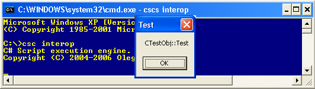

Thre are two possibe approaches to access COM objects: importing type libraries manually or simplified "Single-line COM access" approach. It is recomended to use "Single-line COM access" as it provides seamless access to COM (no manual steps are required). It also allows referencing the COM objects by GUIDS, ProgID or file name (.dll/.ocx) directly from the code.
Note: the location of the generated Runtime Collable Wrapper file depends on the HideAutoGeneratedFiles setting value (see configuration console for details). The location of this file does not affect the script code in any way.
"Single-line COM access"
Download tutorial source code: interop.zip| //css_prescript com(ATLSimpleServ.dll, SimpleServ, /r); using System; using SimpleServ; class Test { public static void Main(string[] args) { CTestObjClass COMObject = new CTestObjClass(); COMObject.Test(); } } |
The script will display "CTestObj::Test" MessageBox.

The
"Single-line COM access" is heavily based on the concept of Pre-
and Post-execution scripts.
In this example the script creates the instance and calls the method Test() of the COM object CTestObj.
At the start of the execution the script engine executes com.cs script specified with the pre-script directive:
| //css_prescript com(ATLSimpleServ.dll, SimpleServ, /r); |
| //css_prescript com(ATLSimpleServ.dll, SimpleServ, /r); //css_postscript com(ATLSimpleServ.dll, /u); |
The com.cs script allows importing the COM servers specified not only by the name of the dll implementing it, but also by GUID or ProgID which can be used to identify the corresponding type library.
This is an example of accessing the COM server SYSINFO.SysInfo.1 in order to retreive battery status (SysInfo.cs):
| //css_prescript com(SYSINFO.SysInfo.1, SisInfoLib); using System; using SisInfoLib; class Script { [STAThread] static public void Main(string[] args) { SysInfoClass sysInfo = new SysInfoClass(); switch (sysInfo.ACStatus) { case 0: Console.WriteLine("Not using AC power"); break; case 1: Console.WriteLine("Using AC power"); break; default: Console.WriteLine("Unknown AC power status"); break; } if (sysInfo.BatteryLifePercent != 255) Console.WriteLine("Battery life "+sysInfo.BatteryLifePercent+"%"); else Console.WriteLine("Battery charge status not known"); } } |
Note that the COM server in this case does not require any registration. This is because it is always present and registered on any Windows with VB controls installed. And this is the reason why you can access it by ProgID (SYSINFO.SysInfo.1 in SysInfo1.cs).
Alternativelly you can specify the COM server by it's GUID (or TypeLibrary GUID):
//css_prescript com({6FBA474B-43AC-11CE-9A0E-00AA0062BB4C}, SisInfoLib);
If you do not have VB controls installed the use of the GUID/ProgID can be illustrated by the msxml.cs sample which utilises MS XML parser COM server (%SystemRoot%\system32\msxml2.dll).
Another example of specifying the COM object by it's ProgID is the setEv.cs script. It illustrates how to use VBScript style programming to permanently set environment variable.
Remember that the pre- and post-execution scripts are not executed when the main script is opened for debugging in the VS2003 (this does not apply for VS2005) .
| using System; using SimpleServ; class Test { public static void Main(string[] args) { CTestObjClass COMObject = new CTestObjClass(); COMObject.Test(); } } |
The script engine dynamically identifies SimpleServ.dll referenced from the code (using SimpleServ;) and loads it at run-time. Alternatively SimpleServ.dll can be loaded with //css_reference directive:
| //css_reference SimpleServ.dll; using System ; class Test ... |
The difference between the "Manual importing" and "Single-line COM access" samples is in the presence of //css_prescript directive. The rest of the code is the same.
Note thet the script engine dynamically identifies SimpleServ.dll referenced from the code and dynamically loads it at the run-time. Alternatively SimpleServ.dll can be loaded with the //css_reference directive:
|
//css_prescript com(ATLSimpleServ.dll, SimpleServ, /r); //css_reference SimpleServ.dll; using System ; class Test { public static void Main(string[] args) { SimpleServ.CTestObjClass COMObject = new SimpleServ.CTestObjClass(); COMObject.Test(); } } |
Extending the scripting system | Pre- and Post-execution scripts